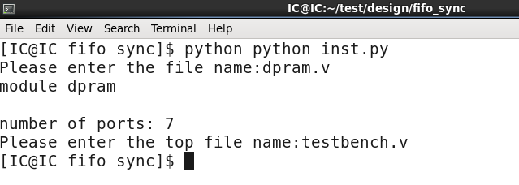
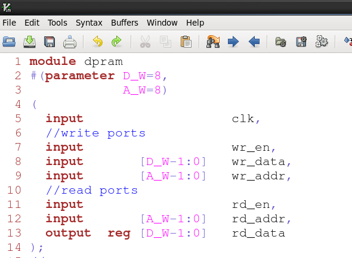
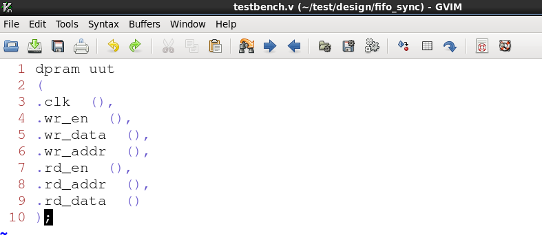

原文出处:本文由博客园博主没落骑士提供。
原文连接:https://www.cnblogs.com/moluoqishi/p/11332152.html
原文连接:https://www.cnblogs.com/moluoqishi/p/11332152.html
一、前言
初入职场，一直忙着熟悉工作，就没什么时间更新博客。今天受“利奇马”的影响，只好宅在家中，写写技术文章。芯片设计规模日益庞大，编写脚本成了芯片开发人员必要的软技能。模块端口动不动就几十上百个，手动编写代码伤不起。实现verilog模块例化模板的自动生成也算是我自砸饭碗的第一步了O(∩_∩)O！
二、代码设计
要自动生成模块例化模板总共分三步：1 打开设计文件，读取内容 2 正则匹配 3 打开指定上层文件，写入例化模板。涉及到的知识点主要有文件读写和正则匹配。该脚本分别用两个表达式匹配模块名称和端口列表，之后把两者按照verilog模块例化的代码规则写入到指定文件。具体细节上代码之后再说：


1 #!/usr/bin/python
2
3 import re
4 import os
5
6 #regex compile
7 regex_module = re.compile('(module)(\s+)(\w+)')
8
9 regex_ports = re.compile('''
10 (input|output) #0
11 (\s+) #1
12 (wire|reg\s+)? #2
13 (\[\w+\-1\:0\]\s+)? #3
14 (\w+) #4
15 ''',re.VERBOSE)
16
17 directory = os.getcwd()
18 #open the design file
19 file_design = input('Please enter the file name:')
20 with open(directory+'/'+file_design,'r') as file_obj:
21 comment = file_obj.read()
22
23 #regex match module name
24 module_obj = regex_module.search(comment)
25 print(module_obj.group())
26 #regex match ports name
27 groups_ports = regex_ports.findall(comment)
28 print('\nnumber of ports:',len(groups_ports))
29
30 #write the instantiation templete to an assigned file
31 file_tb = input('Please enter the top file name:')
32 with open(directory+'/'+file_tb,'a') as file_obj2:
33 if module_obj is not None:
34 file_obj2.write(module_obj.group(3)+' uut\n(\n')
35
36 num = len(groups_ports)
37 for i in range(num):
38 if i == num-1:
39 file_obj2.write('.'+groups_ports[i][4]+' ()\n')
40 else:
41 file_obj2.write('.'+groups_ports[i][4]+' (),\n')
42 file_obj2.write(');\n')python的文件读写非常简洁，使用with open打开可以确保在合适的时候自动关闭文件，防止数据受损丢失。为了保证代码通用性，使用os.getcwd获取当前脚本所在路径，这样改动路径时不需要再次修改代码即可照常运行。至于正则匹配在之前的博文：python中正则表达式与模式匹配 - 没落骑士 - 博客 https://www.cnblogs.com/moluoqishi/p/10825221.html 中已经描述的比较详尽了，这里不再赘述。有一点需要注意，search和findall返回的数据结构不同，依次是匹配对象和匹配内容列表。
三、运行结果
最后我们来看下运行结果。命令行：

设计源文件及写入文件：

脚本正确生成设计模块的例化模板，后续再进一步优化。